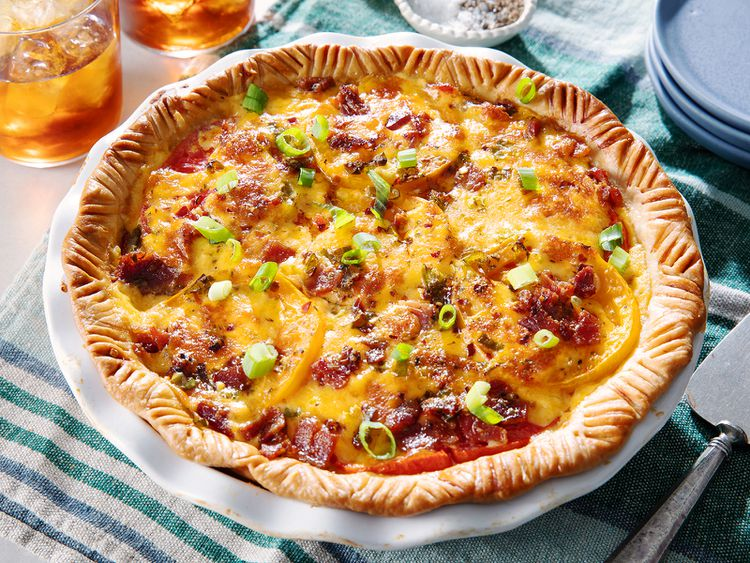

Home
Tomato Pie

Description
This savory tomato pie has layers of juicy, rip sliced tomatoes, cheese,
bacon, and fresh basil! it's so delicious and perfect for summer.
If you're not familar with tomatoes in pie, you've been missing out.
Imagine in your head a savory tomato tart. Tomato pie come to us from
the south, and just like the many different parts of this region, there
are many different ways to prepare a tomato pie. This recipe is a crowd-
pleaser through, and it will cause your friends and family to ask for your
secret.
Ingredients
These are the ingredients you'll need to make this homemade tomato pie:
- Pie crust: Use a store-brought pastry crust or make your own at home.
- Tomatoes: You'll need four large (peeled and sliced) tomatoes.
- Bacon: Cooked, drained, and chopped bacon lends meaty flavor.
- Green onions: Green onions and a bright pop of flavor and color.
- Seasonnings: Season the tomato pie with fresh basil, dried oregano, garlic powder, and crushed red pepper.
- Cheese: Shredded Cheddar cheese makes the tomato pie extra indulgent.
- Mayonnaise: Mayonnaise give the tomato pie creaminess and adds tangy flavor.
Steps
- Add all the ingredients (besides the cheese and mayonnaise) to the pie crust.
- Mix the cheese and mayonnaise together and spread the mixture over the filling.
- Cover with foil and bake for 30 minutes, uncover, and bake for 30 more minutes.